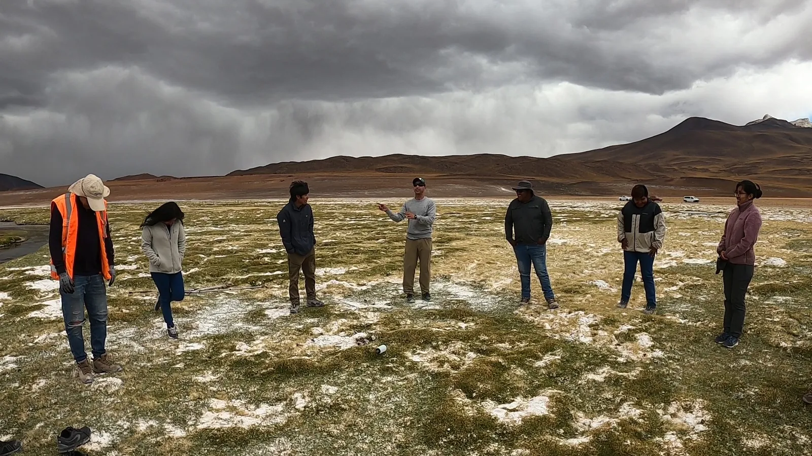
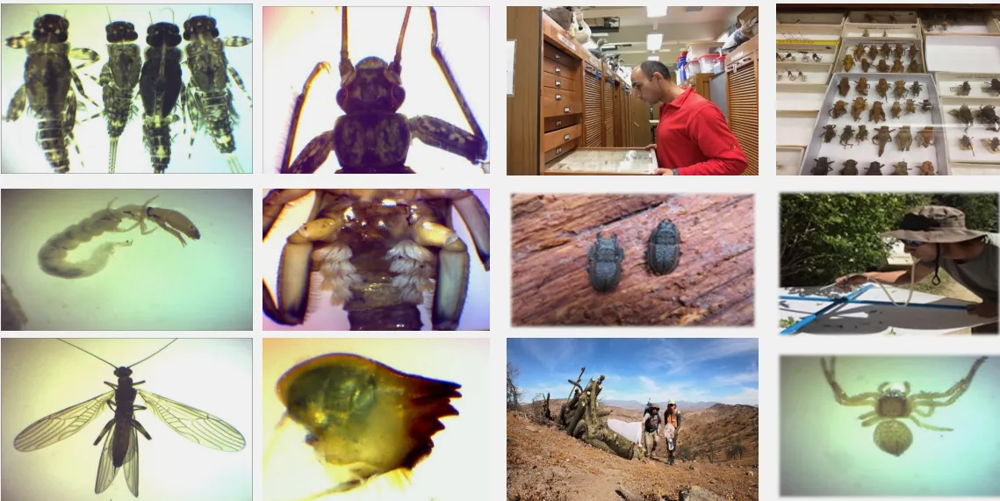

Línea base de artrópodos
Caracterización de entomofauna e invertebrados terrestres en el área de influencia para evaluar posibles impactos ambientales.
Ver línea base de artrópodos
Servicios ambientales en Chile
Diseñamos cada servicio según las características del proyecto, el territorio y sus requerimientos técnicos.
Estamos en el ambiente
Nuestra consultoría combina trabajo de terreno, análisis taxonómico y elaboración técnica para acompañar procesos ambientales en el marco del SEIA.
También desarrollamos experiencias de educación ambiental que acercan el conocimiento científico a empresas, comunidades y establecimientos educativos.
Consultoría ambiental
Caracterización de entomofauna e invertebrados terrestres en el área de influencia para evaluar posibles impactos ambientales.
Ver línea base de artrópodosCaracterización de vertebrados y otros componentes de fauna para describir el área de influencia y apoyar la evaluación ambiental.
Ver línea base de faunaSeguimiento de componentes biológicos mediante campañas comparables durante las fases relevantes del proyecto.
Ver monitoreo de biodiversidadIdentificación de zooplancton, fitoplancton, zoobentos y fitobentos de sistemas dulceacuícolas.
Ver taxonomía acuáticaProgramas participativos para acercar la biodiversidad, la observación científica y el territorio a distintas audiencias.
Ver educación ambientalJornadas para empresas y organizaciones, adaptadas a los objetivos, participantes y contexto de cada equipo.
Ver capacitaciones ambientales
Terreno · laboratorio · análisis · información técnica

Educación ambiental
Diseñamos actividades participativas que promueven la observación, la curiosidad y la comprensión de los ecosistemas.
Cómo trabajamos
Definimos el alcance y la metodología antes de ejecutar, para entregar resultados claros y pertinentes.
Revisamos necesidades, contexto y requerimientos.
Proponemos alcance, metodología y planificación.
Desarrollamos el trabajo técnico o educativo.
Organizamos resultados y recomendaciones.
Preguntas frecuentes
Información útil para evaluar si nuestras capacidades se ajustan a tu proyecto.
Líneas base de fauna, plan de seguimiento ambiental, identificación taxonómica, informes técnicos y programas de educación ambiental.
Sí. Desarrollamos estudios de línea base y levantamientos ambientales para proyectos sometidos al Sistema de Evaluación de Impacto Ambiental en Chile.
Nuestra experiencia abarca ecosistemas desérticos del norte, sistemas dulceacuícolas y bosques templados del sur de Chile.
Trabajamos con entomofauna, zooplancton, fitoplancton, zoobentos y fitobentos de sistemas dulceacuícolas.
Sí. Diseñamos talleres, programas para empresas, interpretación ambiental y actividades de yoga y naturaleza.
Cotiza tu proyecto
Evaluaremos el alcance y la solución más adecuada para tu organización.